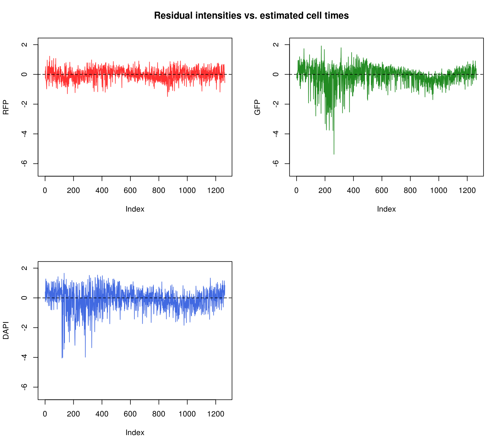

parametric cellcycleR for image intensities
Joyce Hsiao
Last updated: 2017-12-13
Code version: a7d7906
Introduction/Summary
\(~\)
In this document, we assess the fit of cellcycleR across all samples and all batches. The idea is to assess the deviations from model fit for each individual and each batch. From the structure of deviation from the model fit, we can learn major sources of variation and develop strategies for removing unwanted variation accordingly.
\(~\)
Data Preparation
\(~\)
Step 1: Correct for backgorund noise:
We correct for background intensity by substracting from each pixel the background median intensity. Then we sum up the background-corrected intensities and then take log transformation of the sum. log transformation is frequently used in image transformation for increasing contrast of the image, especially for regions with low pixel intensity.
\(F\): Pixel intensity matrix for in each FUCCI image.
\(F^{f}\): Fluorescent intensity values located inside the defined forground area. Set to be \(100 \times 100\) area centered at the nucleus.
\(F^{b}\): Fluorescent intensity values for pixels in the background area.
\(N^f\) and \(N^b\): Mumber of pixels located in the foreground and background area, respectively.
\[ I = log10 \sum_{pixels \,\,\in \,\,foreground} \big( F^{f} - median (F^{b}) \big) \]
\(~\)
Step 2: Standardize background-corrected intensities:
For GFP, RFP, and DAPI separatley, standardize background-corrected fluorescent intensity measurements as follows.
\(I_{nj}\): Background-correctd intensity values in single cell sample \(n\) and batch \(j\).
\(\bar{I}\): Mean background-correctd intensity values across sample \(n=1,\dots, N\) and batches \(j=1,\dots,J\).
\(S\): Standard deviation of background-corrected intensity values \(I_{nj}\).
\[ Z = \frac{I_{nj} - \bar{I}}{S} \]
\(~\)
Results
Fit 200 interations. loglik = -3369.
Fit appears to be better for RFP than for GFP and DAPI.
Considering clustering of samples in the bivariate distribution of Red and Gree intensities. The sample clusters appear to coincide with the estimated cell times.
Consider residual intensities at the individual level, variation around the mean for all three channles is smaller than the observed intensity.
Consider residual intensity at the batch level within each individual, standard deviations are smaller for Red than for Green and DAPI. Moreover, for the most part, means of the residuals center at the mean for all channels, and more so for Red than for Green across the batches. These results suggest that there’s no need to fit a batch-level model for intensities.
Consider residual intensity at the batch level. For RFP, there’s not much variation between batches. For GFP, the variation of residual intensities is the largest for plate
18511_18855and plate19160_18870. The plate18511_18855was the first one done in imaging, and the plate19160_18870contains the most bubbles on the plates based on imaging results.
\(~\)
Next steps
- Assess model convergence conditions: run 10 times on 500 iterations; compare model convergences between different starting points (instead of random time, assign fixed time).
\(~\)
Load data
\(~\)
Import combined intensity data (see combine-intensity-data.R).
\(~\)
ints <- readRDS(file="/project2/gilad/joycehsiao/fucci-seq/data/intensity.rds")\(~\)
Estimated cell time
\(~\)
Observed intensity by time
\(~\)
\(~\)
Residuals by cell time
\(~\)

\(~\)
Red/Green by cell time
\(~\)
Residuals distributions
\(~\)
By individual
\(~\)
\(~\)
By individual and batch
\(~\)

\(~\)
\(~\)
\(~\)
By batch
\(~\)
\(~\)
Session information
R version 3.4.1 (2017-06-30)
Platform: x86_64-pc-linux-gnu (64-bit)
Running under: Scientific Linux 7.2 (Nitrogen)
Matrix products: default
BLAS: /home/joycehsiao/miniconda3/envs/fucci-seq/lib/R/lib/libRblas.so
LAPACK: /home/joycehsiao/miniconda3/envs/fucci-seq/lib/R/lib/libRlapack.so
locale:
[1] LC_CTYPE=en_US.UTF-8 LC_NUMERIC=C
[3] LC_TIME=en_US.UTF-8 LC_COLLATE=en_US.UTF-8
[5] LC_MONETARY=en_US.UTF-8 LC_MESSAGES=en_US.UTF-8
[7] LC_PAPER=en_US.UTF-8 LC_NAME=C
[9] LC_ADDRESS=C LC_TELEPHONE=C
[11] LC_MEASUREMENT=en_US.UTF-8 LC_IDENTIFICATION=C
attached base packages:
[1] parallel stats graphics grDevices utils datasets methods
[8] base
other attached packages:
[1] Biobase_2.38.0 BiocGenerics_0.24.0 RColorBrewer_1.1-2
[4] wesanderson_0.3.2 cowplot_0.8.0 dplyr_0.7.0
[7] data.table_1.10.4 cellcycleR_0.1.2 zoo_1.7-14
[10] binhf_1.0-1 adlift_1.3-3 EbayesThresh_1.4-12
[13] wavethresh_4.6.8 MASS_7.3-45 ggplot2_2.2.1
loaded via a namespace (and not attached):
[1] Rcpp_0.12.14 compiler_3.4.1 git2r_0.19.0 plyr_1.8.4
[5] tools_3.4.1 digest_0.6.12 evaluate_0.10.1 tibble_1.3.3
[9] gtable_0.2.0 lattice_0.20-34 rlang_0.1.2 yaml_2.1.14
[13] stringr_1.2.0 knitr_1.16 rprojroot_1.2 grid_3.4.1
[17] glue_1.1.1 R6_2.2.0 rmarkdown_1.6 magrittr_1.5
[21] backports_1.0.5 scales_0.4.1 htmltools_0.3.6 assertthat_0.1
[25] colorspace_1.3-2 labeling_0.3 stringi_1.1.2 lazyeval_0.2.0
[29] munsell_0.4.3 This R Markdown site was created with workflowr